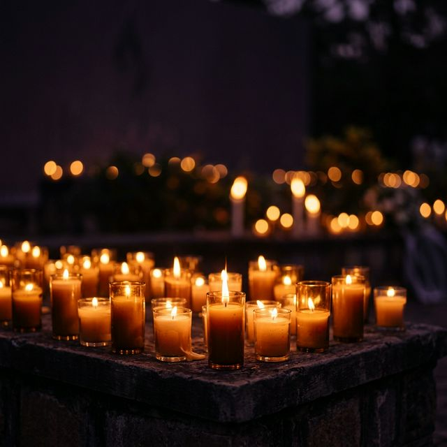
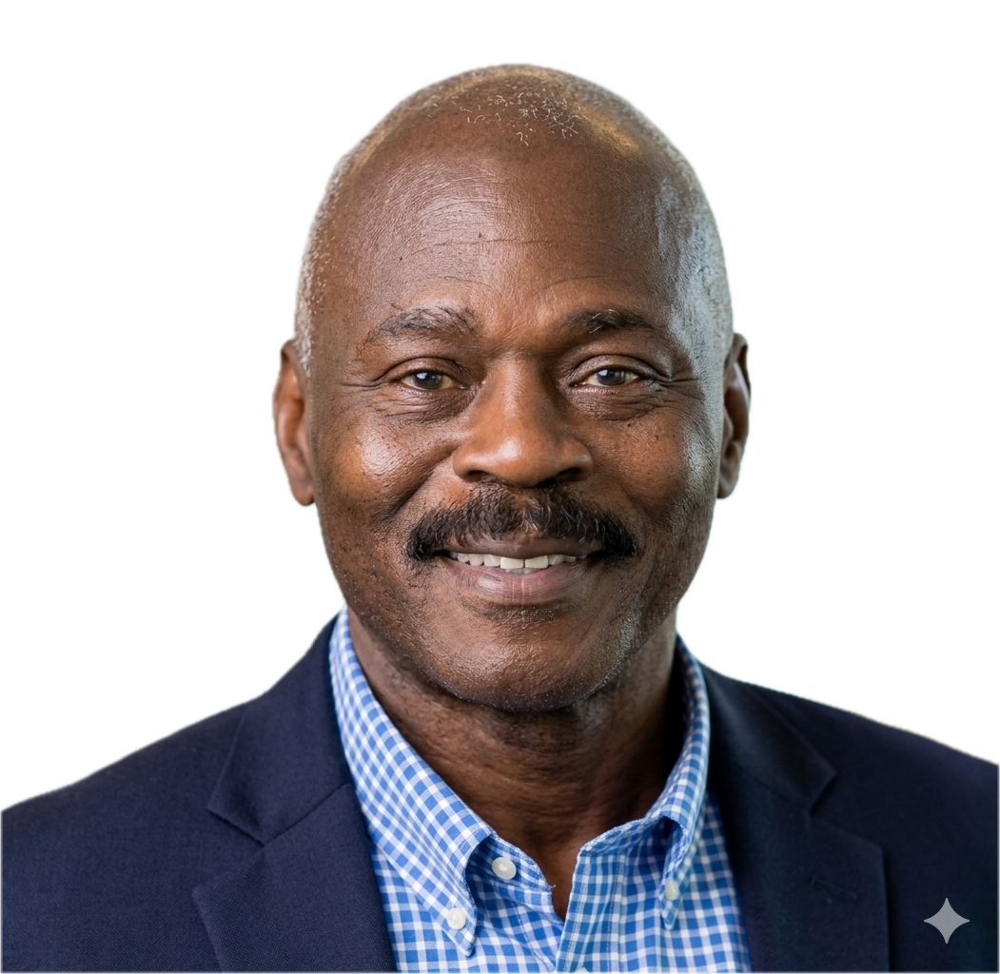
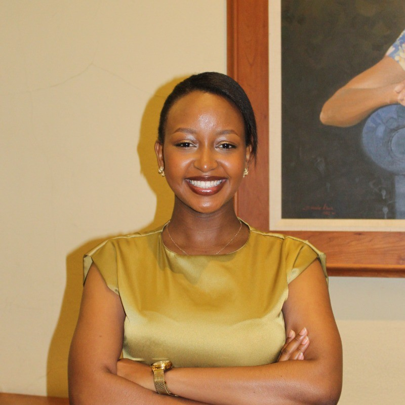

Join the Swarthmore College Rwandan community for an evening of remembrance, reflection, and unity — honoring the victims of the 1994 Genocide Against the Tutsi in Rwanda.
Kwibuka — meaning "to remember" in Kinyarwanda — is an annual commemoration dedicated to honoring the victims of the 1994 Genocide Against the Tutsi in Rwanda. This remembrance unites communities in Rwanda, in the USA, and around the world to pay tribute to those who lost their lives, support survivors, and promote a future rooted in peace and unity.
Kwibuka serves as a moment for reflection, healing, and education. It allows communities to honor over one million lives lost, reinforce support for survivors, and educate younger generations on the dangers of hatred and division.
Kwibuka emphasizes a shared commitment to "Never Again," fostering unity and resilience to prevent future atrocities. The commemoration begins on April 23 each year and lasts for 100 days — a period that mirrors the duration of the 1994 Genocide Against the Tutsi.
An evening of remembrance, reflection, and community — from opening remarks to the closing candle lighting ceremony.
Guests arrive and are welcomed with programs and flyers. Soft background music sets a reflective tone for the evening.
The MC introduces the event, its purpose, and acknowledges the significance of Kwibuka and the importance of remembrance.
Peter Sosi, who worked with the United Nations during the genocide, answers pre-selected questions from the MC. Focus on firsthand experiences, lessons, and reflections from the international response.
A Swarthmore student from the post-genocide generation shares a personal perspective on remembrance, legacy, and what "Never Again" means to their generation.
A reflective poem is read aloud to honor the victims and transition the audience into a moment of deep remembrance.
Names of victims and survivors are read aloud by multiple readers, accompanied by soft background music. A solemn tribute to ensure they are never forgotten — they had names, dreams, families, and friends.
Attendees participate in a communal candle lighting ceremony, symbolizing resilience, unity, and a commitment to a peaceful future. Includes a moment of silence.
A short documentary highlighting survivor stories, historical context, and Rwanda's journey of reconciliation and rebuilding is shown.
The MC thanks attendees and encourages continued reflection. Light refreshments are served as the community gathers in fellowship.
Hear from those with firsthand experience and a deep connection to this history.

Peter Sosi who served as a United Nations peacekeeper during the 1994 Genocide Against the Tutsi in Rwanda. He will share firsthand experiences, lessons learned, and reflections on the international community's response during and after the genocide.

A Swarthmore College student from the post-genocide generation will share a personal perspective on what remembrance means today — exploring legacy, identity, and the responsibility to carry the torch of "Never Again."
Deepen your understanding through these recommended books, documentaries, and organizations. These materials are also available at an exhibit in McCabe Library.
Interviews with survivors of the 1994 Genocide in Rwanda.
DT450.435 .W4 2011Post-genocide justice and reconciliation in Rwanda — justice without lawyers.
KTD454 .C57 2010Between retribution and reparation.
KTD157.7 .B67 2012How My Family Survived the Genocide in Rwanda — a story of resilience and faith.
Philip Gourevitch's powerful account of stories from Rwanda.
A journey of transformation — exploring healing and hope in the aftermath of genocide.
Organization supporting survivors and promoting remembrance. ibukausa.org
The official Kwibuka remembrance website from Rwanda. kwibuka.rw
"7 April 1994" — The role of independent media and firsthand accounts.
Join us in the IC Dome at Swarthmore College for an evening of reflection and solidarity.
We remember. We honor. We unite. Together, we carry the solemn responsibility to ensure that the horrors of the past are never repeated — and that every life lost is never forgotten.